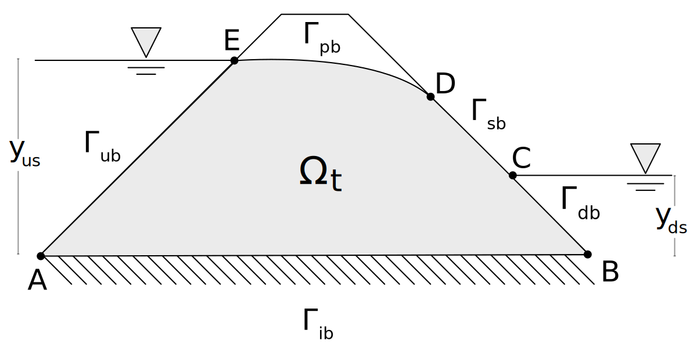
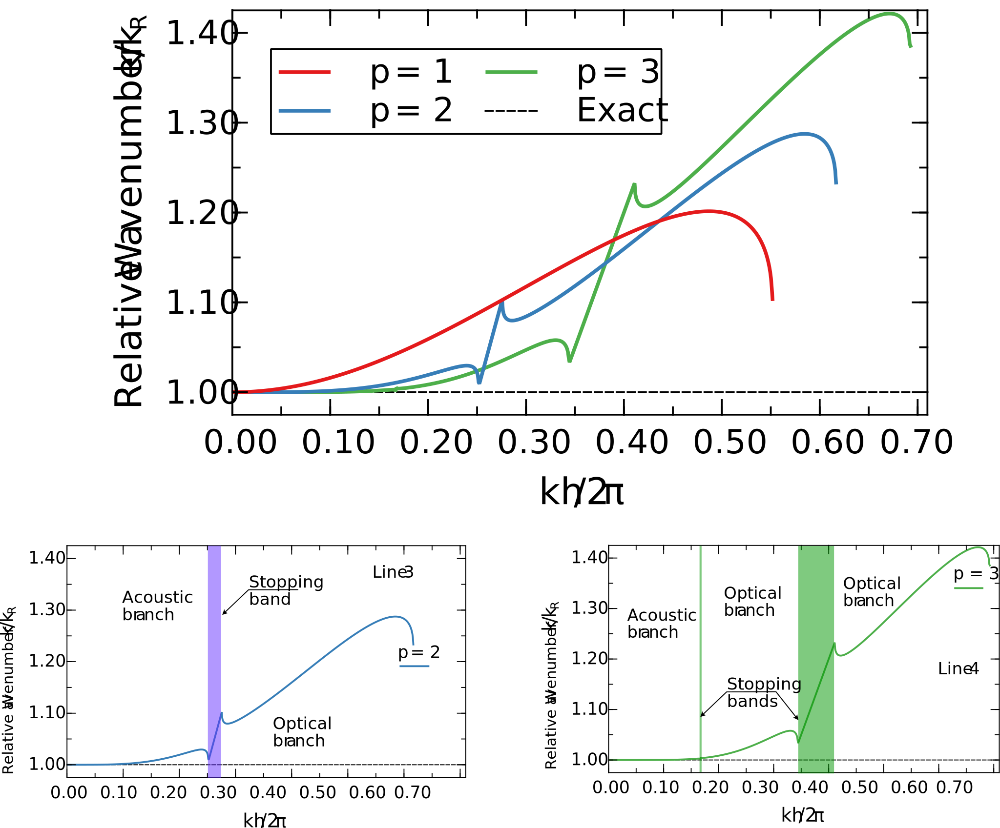
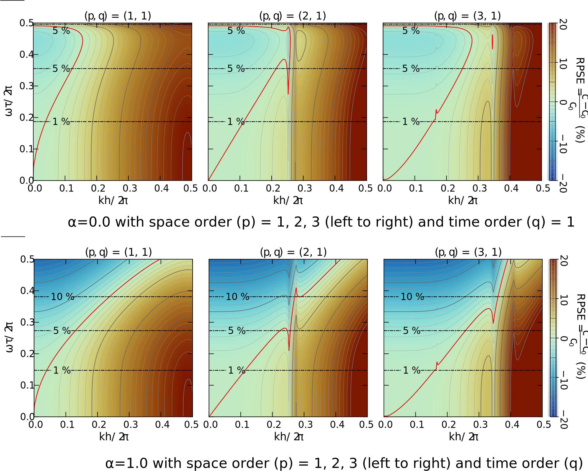
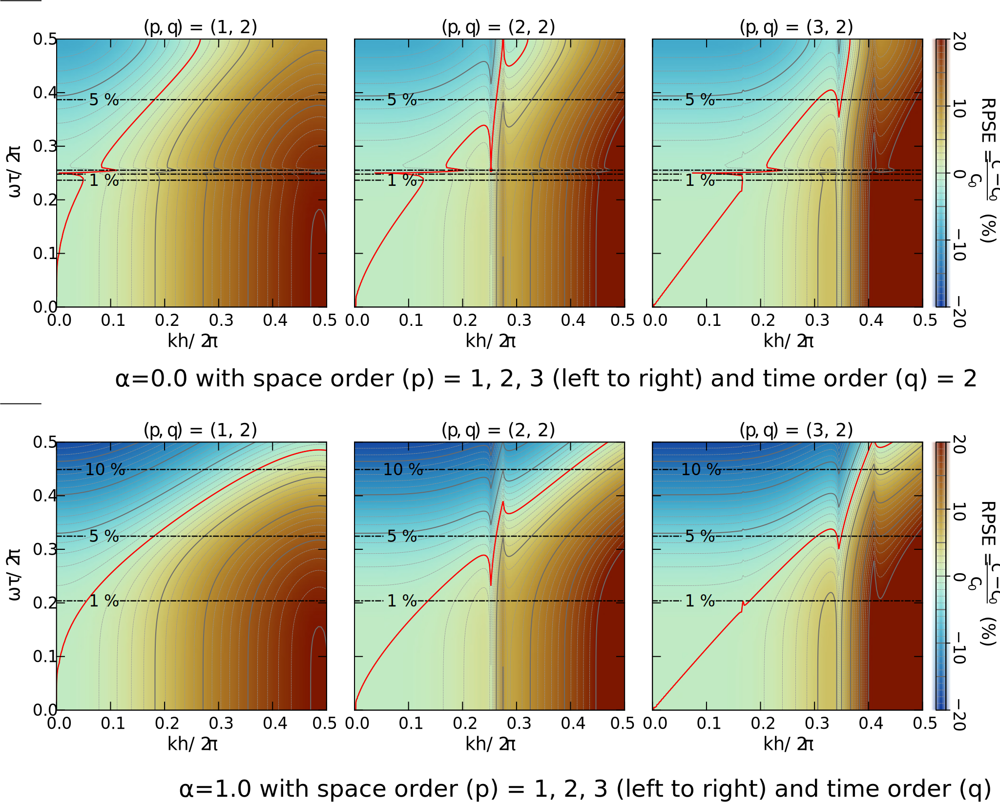
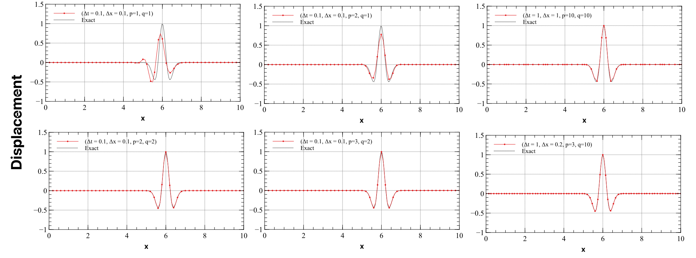

Space-Time Finite Element Methods (ST/FEM) for Transient Problems in Geomechanics
Outlines
- Introduction to transient problems in Geomechanics
- Introduction to Semidiscrete FEM
- Limitations of semidiscrete FEM and need for Space-Time FEM
- Arbitrary Higher Order Space-Time FEM
- Numerical Examples
- Conclusions
Motivation
The main goal of this presentation is to introduction to Space-Time Finite Element Method to a general audience. This presentation will provide details related to the implementation of Space-Time Finite Element Methods.
Introduction
Introduction: Transient problems in Geomechanics
Transient problems
In geomechanics, transient problems refer to time-dependent phenomena where the state variables (such as displacement, pore pressure, stress, or temperature) change continuously over time. The governing equations of these problems include time derivatives of solution.
- Transient problems differ from steady-state problems, where the variables remain constant with time after a certain point.
Examples
- Seepage through soils
- Consolidation of soils
- Seismic wave propagation in geological medium
- Dynamic soil-structure interactions
- Dynamic response of saturated soils
Transient problems: Seepage flow
Let, \(\Omega\) be the computation domain, then \(\forall (\mathbf{x},t) \in \Omega \times \left(0, T \right]\)
Governing Equations
\[ S_{w} \frac{{\partial P_{w}}}{\partial t}+\nabla\cdot\mathbf{v}_{w}=0, \]
\[ P_{w}:=p_{w}+\rho_{w} g y, \]
\[ \mathbf{v}_{w}=-\frac{\mathbf{k}_s}{\mu_w} \nabla P_{w} , \]
Boundary and Initial conditions
\[ P=P_0, \quad \text{ in } \Omega \text{ at } t=0, \]
\[ P=\begin{cases} \rho_{w} g y_{us} & \text{ on }\Gamma_{ub}\\ \rho_{w} g y_{ds} & \text{ on }\Gamma_{db}\\ \rho_{w} g y & \text{ on }\Gamma_{pb} \cup \Gamma_{sb} \end{cases} \]
\[ \mathbf{v}_{w} \cdot \mathbf{n} = 0 \text{ on } \Gamma_{ib} \]

\(S_{w}\) is the storativity of the fluid, \(P_{w}\) is the piezometric pressure, \(p_{w}\) is the fluid pressure, \(\rho_w\) is the mass density of water, \(g\) is the acceleration due to gravity, \(y\) is the vertical coordinate measured from the base. \(\mathbf{k}_s\) and \(\mu_w\) denote the intrinsic permeability of the saturated porous medium and viscosity of water, respectively.
Transient problems: Elastic wave propagation
\(\Omega\) is the computation domain, then \(\forall (\mathbf{x},t) \in \Omega \times \left(0, T \right]\)
Governing equations
\[ \rho \frac{\partial v_{i}}{\partial t} - \frac{\partial \sigma_{ij} }{\partial x_{j}} = \rho f_{i} \]
\[ \frac{\partial u_{i}}{\partial t} = v_{i} \]
\[ \sigma_{ij}=\lambda\varepsilon_{kk}\delta_{ij}+2\mu\varepsilon_{ij} \]
where \(\lambda\) and \(\mu\) are Lame parameters.
Boundary conditions
\[ v_{i}(\mathbf{x},t) = v_{i,g}(t), \text{ on } \Gamma_{g}, \quad \sigma_{ij}n_{j}=h_{i} \text{ on } \Gamma_{h} \]
Initial conditions
\[ v_{i}(\mathbf{x}, 0) = v_{i,0}(\mathbf{x}), u_{i}(\mathbf{x}, 0) = u_{i}(\mathbf{x}) \]
Dynamic soil-structure interaction problems
Elastodynamics equations can be coupled with the pressure wave equation to model the dynamic dam-reservoir-foundation interaction problems.
Pressure wave equation
\[ \frac{1}{c^{2}}\frac{{{\partial ^2}p}}{{\partial {t^2}}} - \frac{{{\partial ^2}p}}{{\partial{x}_{i} \partial{x}_{i} }} = 0 \quad \text{in} \quad \Omega^f \quad \forall t\in (0,T), \]
\(p(\mathbf{x},t)\): hydrodynamic pressure in the water, \(c\): speed of sound in water.
Boundary conditions on the fluid domain
\[ p(\mathbf{x},t) = 0 \quad \text{on} \quad \Gamma^{f}_{f}, \]
\[ \nabla p \cdot {\mathbf{n}}^{f} = \begin{cases} -{\rho}^{f}\frac{\partial \mathbf{v}}{\partial {t}} \cdot \mathbf{n}^{f} \text{ on } \Gamma^{f}_{fd} \\ - {\rho}^{f}\frac{\partial \mathbf{v}}{\partial {t}} \cdot \mathbf{n}^{f} - q_{c}\frac{\partial {p}}{\partial{t}} \text{ on } \Gamma^{f}_{fs} \\ - \frac{1}{c}\frac{\partial{p}}{\partial {t}} + \frac{1}{c}\frac{\partial p_{\infty}}{\partial {t}} \quad \text{on} \quad \Gamma^{f}_{\infty} \end{cases} \]
Initial conditions
\[ p\left( {{\mathbf{x}},0} \right) = 0, \frac{{\partial p\left( {{\mathbf{x}},0} \right)}}{{\partial t}} = 0 \quad \text{in} \quad \Omega^f \quad {at} \quad t=0 \]
Finite Element Method (FEM) For Wave Propagation Problems
To understand the working principles of finite element method (FEM) for transient problems, henceforth we will consider the scalar wave propagation problem.
Scalar wave propagation problems
Governing equations: Primary unknown \(\phi(\mathbf{x}, t)\) is a scalar field. \(\Omega\) is the spatial computation domain, and \(T\) is the time duration of interest. Then for all \((\mathbf{x}, t) \in \Omega \times (0, T]\) the governing equations are given by:
\[ \frac{\partial {v}}{\partial t}-c^{2}\frac{\partial^{2} \phi}{\partial x_{j}\partial x_{j}}=f(\mathbf{x}, t), \quad \frac{\partial \phi}{\partial t} = v \]
Initial conditions: \(v(\mathbf{x},t=0) = v_{0}(\mathbf{x})\), \(\phi(\mathbf{x},t=0) = \phi_{0}(\mathbf{x})\)
Boundary conditions: Dirichlet and Neumann boundary conditions are given by:
\[ v(\mathbf{x},t) = v_{g}(t), \text{ on } \Gamma_{g} \]
\[ \frac{\partial \phi}{\partial x_{j}}n_{j}=h \text{ on } \Gamma_{h} \]
Time Harmonic Solutions: For the sake of analysis, we will focus mainly on time harmonic solution of the following form.
\[ \begin{equation} \phi^{h}(\boldsymbol{x},t)=\phi_{1}^{h}e^{i\left(\mathbf{k}_{1}^{h}\cdot\boldsymbol{x}- \omega_{1}^{h}t\right)}+\phi_{2}^{h}e^{i\left(\mathbf{k}^{h}_{2}\cdot\boldsymbol{x}-\omega_{2}^{h}t\right)}+\cdots \end{equation} \]
where, \(k_{i}\) is wavenumber, \(\omega_{i}\) is angular frequency, which are dependent on each other: \(k_{i} = \omega_{i} / c\)
Nondispersive media
For non-dispersive media \(c\) is independent of angular frequency and wave number, that is, all modes propagate with the same speed \(c\).
\[ c = \frac{\omega_{1}}{k_{1}} = \frac{\omega_{2}}{k_{2}} = \cdots = \frac{\omega_{i}}{k_{i}} \]
FEM in Space: Strong and Weak Form
Strong form: The “Partial Differential Equations (PDE)” with well-posed boundary and initial conditions are known as the strong form of the problem.
\[ \frac{\partial v}{\partial t}-c^{2}\frac{\partial^{2}\phi}{\partial x_{j}\partial x_{j}}=f(\mathbf{x}, t), \quad \frac{\partial \phi}{\partial t} = v \]
Weak form: The variational form of the problem is known as the weak form of the problem. It is an integral equation which is related to “some sort of minimization principle”.
\[ B\left(\delta \phi, \phi\right)_{\Omega}=L\left(\delta \phi\right)_{\Omega} \]
Here \(\delta \phi\) is the test function, \(\phi\) is the trial function, and \(B(\delta \phi, \phi)\) is the bilinear form, and \(L(\delta \phi)\) is the linear functional. For Galerkin FEM \(B\) and \(L\) are defined as follows:
\[ B\left(\delta \phi, \phi\right)_{\Omega}:={\left(\delta \phi,\frac{\partial^{2} \phi}{\partial t^{2}}\right)}_{\Omega}+\left(\frac{\partial\delta \phi}{\partial x_{i}},c^{2}\frac{\partial \phi}{\partial x_{i}}\right)_{\Omega} \]
\[ L\left(\delta \phi\right)_{\Omega}:=\left(\delta \phi,f\right)_{\Omega}+\left\langle \delta \phi,h\right\rangle _{\Gamma_{h}} \]
where \((\cdot, \cdot)_{\Omega}\) denotes the spatial integral over \(\Omega\).
\[ (a, b)_{\Omega} = \int_{\Omega} {a \cdot b} d\Omega \]
FEM in Space: Discretization
In FEM the global solution is approximated by using piecewise polynomials over the finite elements.
\[ \phi(\mathbf{x},t) = \sum_{I}{\phi^{I}(t) N^{I}(\mathbf{x})}, \quad v(\mathbf{x},t) = \sum_{I}{V^{I}(t) N^{I}(\mathbf{x})} \]
- \(\phi^{I}\) and \(V^{I}\) are the nodal value of \(\phi\) and \(v\) at node \(I\). They are time-dependent.
- \(N^{I}(\mathbf{x})\) is the shape functions associated with node \(I\). They are time-independent.
FEM in Space: Discrete form
After substituting the piecewise approximation of test and trial functions in the variation form we obtain the discrete form in Space, which is a system of ordinary differential equations (ODEs).
\[ \mathbf{M}\frac{d\mathbf{V}}{dt}+\mathbf{K}\mathbf{\Phi}=\mathbf{F} \\ \mathbf{V}(0)=\mathbf{V}_{0}, \mathbf{\Phi}(0)=\mathbf{U}_{0} \]
- \(\mathbf{M}\) and \(\mathbf{K}\) are the global mass and stiffness matrix, they are obtained by assembly of element level mass and stiffness matrices, \(\mathbf{M}^{e}\), \(\mathbf{K}^{e}\).
- The size of global matrices depends on the total number of elements in the mesh and the local order of approximation inside each element.
\[ \mathbf{M}^{e}=\left[\begin{array}{cccc} m_{11}^{e} & m_{12}^{e} & m_{13}^{e} & m_{14}^{e}\\ m_{21}^{e} & m_{22}^{e} & m_{23}^{e} & m_{24}^{e}\\ m_{31}^{e} & m_{32}^{e} & m_{33}^{e} & m_{34}^{e}\\ m_{41}^{e} & m_{42}^{e} & m_{43}^{e} & m_{44}^{e} \end{array}\right], \quad \mathbf{K}^{e}=\left[\begin{array}{cccc} k_{11}^{e} & k_{12}^{e} & k_{13}^{e} & k_{14}^{e}\\ k_{21}^{e} & k_{22}^{e} & k_{23}^{e} & k_{24}^{e}\\ k_{31}^{e} & k_{32}^{e} & k_{33}^{e} & k_{34}^{e}\\ k_{41}^{e} & k_{42}^{e} & k_{43}^{e} & k_{44}^{e} \end{array}\right] \]
\[ m_{IJ}^{e}=\int_{\Omega^{e}}N^{I}N^{J}d\Omega, \quad k_{IJ}^{e}=\int_{\Omega^{e}}c\frac{\partial N^{I}}{\partial x_{i}}\frac{\partial N^{J}}{\partial x_{i}}d\Omega \]
FEM in Space: Spatial Discretization Errors
- Continuous system The space and time domains are continuous, and the solution satisfies the strong form.
- The exact solutions are given by Time Harmonic Solutions:
\[ \begin{equation} \phi^{h}(\boldsymbol{x},t)=\phi_{1}^{h}e^{i\left(\mathbf{k}_{1}^{h}\cdot\boldsymbol{x}- \omega_{1}^{h}t\right)}+\phi_{2}^{h}e^{i\left(\mathbf{k}^{h}_{2}\cdot\boldsymbol{x}-\omega_{2}^{h}t\right)}+\cdots \end{equation} \]
- After spatial discretization a continuous system in space is replaced by a discrete system in the space domain.
\[ \mathbf{M}\frac{d\mathbf{V}(t)}{dt}+\mathbf{K}\mathbf{\Phi}(t)=\mathbf{F}(t) \]
- The temporal domain is still continuous, so at this stage, there are no temporal errors induced.
- The numerical solution \(\phi^{h}(\mathbf{x},t)\) may show inaccuracies in the computed numerical wave number \(\mathbf{k}_{j}^{h}\).
\[ \begin{equation} \phi^{h}(\mathbf{x},t)=\phi_{1}^{h}e^{i\left(\mathbf{k}_{1}^{h}\cdot\boldsymbol{x}- \omega_{1}t\right)}+\phi_{2}^{h}e^{i\left(\mathbf{k}^{h}_{2}\cdot\boldsymbol{x}-\omega_{2}t\right)}+\cdots \end{equation} \]
- Usually, errors in \(\mathbf{k}_{j}^{h}\) is larger for large wavenumbers
- Hence, different wavenumbers will have different wave speed.
- Therefore, numerical results show Numerical Dispersion.
- Computed wavenumber is smaller than the exact wavenumber for Galerkin method with consistent mass matrix.
- Therefore, numerical wave speed is larger than the exact wave speed
FEM in Space: Numerical dispersion error
Figure 6: Numerical dispersion error due to spatial discretization for Line elements Shimizu, Sharma, and Fujisawa (n.d.)
- Higher order elements in space have “Stopping Bands” in the spectrum of relative wavenumber.
- Galerkin method with consistent mass matrix tends to yield smaller wavenumber, i.e., the numerical wave speed is larger than the exact wave speed
- By adopting higher order elements in space we can drastically reduce the dispersion error
FEM in Space: Anisotropic numerical dispersion error
The dispersion error is anisotropic in nature; it depends on the direction of wave propagation
- Linear element suffers from anisotropic numerical dispersion error
- By adopting higher order elements in space we can drastically reduce the dispersion error
- Dependency of error on wave propagation also decreases with higher order elements
- It seems that selecting higher order elements in space is a GOOD idea

Semidiscrete FEM for Wave Propagation Problems
Semidiscrete FEM referred to solving the system of ODEs in time domain using finite difference methods.
Semidiscrete FEM: Newmark Method
To solve the system of ODEs, we can use Newmark method as shown below.
\[ \mathbf{M}\ddot{\mathbf{\Phi}}_{n+1}+\mathbf{K}\mathbf{\Phi}_{n+1}=\mathbf{F}_{n+1} \]
\[ \mathbf{V}_{n+1}=\mathbf{V}_{n}+\left(1-\gamma\right)\Delta t\ddot{\mathbf{U}}_{n}+\gamma\Delta t\ddot{\mathbf{U}}_{n+1} \]
\[ \mathbf{\Phi}_{n+1}=\mathbf{\Phi}_{n}+\mathbf{V}_{n}\Delta t+\frac{\left(1-2\beta\right)}{2}\ddot{\mathbf{\Phi}}_{n}\Delta t^{2}+\beta\ddot{\mathbf{\Phi}}_{n+1}\Delta t^{2} \]
- For \(\gamma = 0.5\) and \(\beta = 0.25\), the method is known as Trapezoidal Rule. It is unconditionally stable and second order accurate in time.
- Time discretization induces additional errors in the numerical solution. Consequently, numerical angular frequency (\(\omega^{h}\)) differs from the exact angular frequency
\[ \begin{equation} u^{h}(\boldsymbol{x},t)=p_{1}^{h}e^{i\left(\mathbf{k}_{1}^{h}\cdot\boldsymbol{x}- \omega_{1}^{h}t\right)}+p_{2}^{h}e^{i\left(\mathbf{k}^{h}_{2}\cdot\boldsymbol{x}-\omega_{2}^{h}t\right)}+\cdots \end{equation} \]
- Relative frequency error for \(k\)th mode is defined by \((\omega - \omega^{h}_{k})/\omega^{h}_{k}\).
- For higher frequency components, the relative frequency error is larger.
Space-Time Discretization Errors: Relative Phase Speed Error (RPSE)
Both spatial and temporal discretization induces error in numerical solutions. The combined effect of these errors is included in the numerical wave speed of \(j\)th mode.
\[ c^{h}_{j} = \frac{\omega_{j}^{h}}{k_{j}^{h}} \]
In this way, the Relative Phase Speeed Error (RPSE) measures the spatial-temporal discretization error.
\[ \mathrm{RPSE} = \frac{c^{h}_{j}-c}{c} =\frac{k}{k_{j}^{h}}\frac{\omega_{j}^{h}}{\omega}-1. \]
For \(RPSE>0\), spatial discretization error dominates, and for \(RPSE<0\), temporal discretization error dominates
Earlier, we saw that \(\frac{k}{k_{j}^{h}} > 1\) due to the spatial discretization error, and \(\frac{\omega_{j}^{h}}{\omega} < 1\) due to the temporal discretization error.
Therefore, if we employ a “proper” spatial and temporal discretization scheme then the spatial-temporal error can balance each-other and we can have minimum spatial-temporal error.
It seems that coupling Trapezoidal Rule with the higher-order spatial elements is not a good choice for wave propagation problems.
Arbitrary Higher Order Space-Time FEM (ST/FEM)
Space-Time Finite Element Method (ST/FEM) is a way to combine higher order spatial elements with higher order order time integration methods.
ST/FEM: Introduction
- Space-Time FEM (ST/FEM) employs FEM in both space and time domains. (Semidiscrete FEM employs FEM in space domain only.). A space-time slab is represented by \(Q_{n} := \Omega \times I_{n}\), where \(I_{n} := (t_{n}, t_{n+1})\) is the time interval and \(\Omega\) is the spatial domain.
- ST/FEM, uses the space-time finite elements to discretize the space-time slab \(Q_{n}\)
- Interpolation of geometry and solution is performed within the space-time finite elements through piecewise polynomial approximation
\[ \mathbf{x}(\boldsymbol{\xi},\theta)=\sum_{\alpha=1}^{n_{\text{ndt}}}\sum_{I=1}^{n_{\text{nds}}}T_{\alpha}N^{I}\mathbf{x}_{\alpha}^{I}, \]
\[ t(\theta)=\sum_{\alpha=1}^{n_{\text{ndt}}}T_{\alpha}t_{\alpha} \]
\[ \mathbf{v}^{h}(\boldsymbol{\xi},\theta):=\sum_{\alpha=1}^{n_{\text{ndt}}}\sum_{I=1}^{n_{\text{nds}}}T_{\alpha}(\theta)N^{I}(\boldsymbol{\xi})\mathbf{v}_{\alpha}^{I} \]
- The variational form of the problem is defined over the space-time domain, whereas in semidiscrete FEM, the variational form is defined over the spatial domain only.
- Additional, time integration scheme is not needed in the ST/FEM
- ST/FEM allows for arbirary higher order interpolation in both space and time domain. It can allow arbitrary mesh movement which is essential for moving boundary problems and large deformation problems. It can be used as a time-integration scheme for system of ODE obtained after spatial discretization.
ST/FEM for wave propagation problems
Strong form of scalar wave propagation problem. \(\Omega\) is the spatial computation domain, and \(T\) is the time duration of interest. Then for all \((\mathbf{x}, t) \in \Omega \times (0, T]\) the governing equations are given by:
\[ \frac{\partial {v}}{\partial t}-c^{2}\frac{\partial^{2} \phi}{\partial x_{j}\partial x_{j}}=f(\mathbf{x}, t), \quad \frac{\partial \phi}{\partial t} = v \]
Initial conditions: \(v(\mathbf{x},t=0) = v_{0}(\mathbf{x})\), \(\phi(\mathbf{x},t=0) = \phi_{0}(\mathbf{x})\)
Boundary conditions: Dirichlet and Neumann boundary conditions are given by:
\[ v(\mathbf{x},t) = v_{g}(t), \text{ on } \Gamma_{g} \]
\[ \frac{\partial \phi}{\partial x_{j}}n_{j}=h \text{ on } \Gamma_{h} \]
The space-time variational form of the problem is given by:
\[ B\left(\delta v,v\right)_{Q_{n}}=L\left(\delta v\right)_{Q_{n}} \]
\[ B\left(\delta v,v\right)_{Q_{n}}=\left(\delta v,\frac{\partial v}{\partial t}\right)_{Q_{n}}+\left(\delta v_{n},v_{n}^{+}\right)_{\Omega_{n}}+\left(\nabla\delta v,c^{2}\nabla v\right)_{Q_{n}} \]
\[ L\left(\delta v\right)_{Q_{n}}=\left(\delta v,f\right)_{Q_{n}}+\left(\delta v_{n},v_{n}^{+}\right)_{\Omega_{n}}+\left\langle \delta v,h\right\rangle _{P_{n}} \]
Space-time integral over \(Q_{n} = \Omega_{t} \times I_{n}\):
\[ \left(u, v\right)_{Q_{n}}=\int_{I_{n}}\int_{\Omega_{t}} u \cdot v d\Omega dt \]
Spatial integral over \(\Omega_{n}\):
\[ \left(u,v\right)_{\Omega_{n}}=\int_{\Omega_{n}}u\cdot vd\Omega \]
Space-time integral over Neumann boundary \(\Gamma_{h} \times I_{n}\):
\[ \left\langle u,v\right\rangle _{P_{n}}=\int_{I_{n}}\int_{\Gamma_{h}}u\cdot vdSdt \]
ST/FEM: Space-Time Interpolation
In ST/FEM, time elements, \(I_{n}:=(t_{n},t_{n+1})\), are used for discretization of the time domain, and \(t\in I_{n}\) is given by:
\[ t:=t\left(\theta\right)=t_{n}T_{1}\left(\theta\right)+t_{n+1}T_{2}\left(\theta\right), \]
where
\[ T_{1}(\theta)=\frac{1-\theta}{2},\quad T_{2}(\theta)=\frac{1+\theta}{2}, \]
In ST/FEM, velocity \(v\) serves as a primary unknown. This variable is interpolated in such a way that it is continuous in space \(\Omega_{t}\). In time domain, it is interpolated such that it is continuous within \(I_{n}\) but may be discontinuous at the end points of \(I_{n}\), that is, \(t_{n}\) and \(t_{n+1}\). In this way, at \(t_{n}\), \(v\) can have two values \(v_{n}^{-}\) and \(v_{n}^{+}\).
- In this study, Lagrange polynomials are employed for interpolation in space and time domains. We will not consider the movement of the mesh, hence the geometry is fixed in space and time.
- \({\mathbf{V}}^{st}=\left\{ {\mathbf{V}}^{1},{\mathbf{V}}^{2},\cdots,{\mathbf{V}}^{n_{t}}\right\}\) are spatial nodal values of the velocity at the time interpolation points in \(I_{n}\). A similar expression is used to denote \(\mathbf{\Phi}^{st}\). The size of \(\mathbf{V}^{i}\) vector is equal to the total number of degrees of freedom in space domain \(\Omega_{i}\).
ST/FEM: Space-Time Interpolation
\(v\) and \(\phi\) within a space-time element are approximated by the space-time basis functions.
\[ v\left(\xi,\theta\right)=\sum_{a=1}\sum_{I=1}T_{a}\left(\theta\right)N^{I}\left(\xi\right)V_{a}^{I} \]
\[ \phi\left(\xi,\theta\right)=\sum_{I}N^{I}\left(\xi\right)\Phi_{n}^{I}+\Delta t\sum_{a=1}\sum_{I=1}\tilde{T}_{a}\left(\theta\right)N^{I}\left(\xi\right)V_{a}^{I} \]
\(\tilde{T}_{a}\) is called “Displacement” shape functions.
The matrix-vector form of ST/FEM is given by
\[ \begin{bmatrix} \mathbf{M}_{11} & \mathbf{M}_{12} & \cdots & \mathbf{M}_{1(q+1)} \\ \mathbf{M}_{21} & \mathbf{M}_{22} \\ \vdots & & \ddots & \vdots \\ \mathbf{M}_{(q+1)1} & & \cdots & \mathbf{M}_{(q+1)(q+1)} \end{bmatrix} \begin{Bmatrix} \mathbf{V}_{1} \\ \mathbf{V}_{2} \\ \vdots \\ \mathbf{V}_{q+1} \end{Bmatrix} = \begin{Bmatrix} \mathbf{M}\mathbf{V}_{0}^{-} \\ \mathbf{0} \\ \vdots \\ \mathbf{0} \end{Bmatrix} -\frac{\Delta t}{2} \begin{Bmatrix} \mathbf{K\Phi}_{0} \\ \mathbf{K\Phi}_{0} \\ \vdots \\ \mathbf{K\Phi}_{0} \end{Bmatrix} +\begin{Bmatrix} \mathbf{F}_{1} \\ \mathbf{F}_{2} \\ \vdots \\ \mathbf{F}_{q+1} \end{Bmatrix} \]
- \(\mathbf{M}_{ab}\ (a,b=1,\dots,q+1)\) is given by the linear combination of mass matrix \(\mathbf{M}\) and stiffness matrix \(\mathbf{K}\). There size is equal to the number of degrees of freedom in space domain \(\Omega\).
\[ \mathbf{M}_{11}=\left[1+\int_{I_{n}}T_{1}\frac{\partial T_{1}}{\partial t}dt\right]\mathbf{M}+\left[\int_{I_{n}}T_{1}\tilde{T}_{1}dt\right]\mathbf{K}\Delta t \]
\[ \mathbf{M}_{ab}=\left[\int_{I_{n}}T_{a}\frac{\partial T_{b}}{\partial t}dt\right]\mathbf{M}+\left[\int_{I_{n}}T_{a}\tilde{T}_{b}dt\right]\mathbf{K}\Delta t \]
- The resulting linear system has dimensions of \((q+1)n_{eq} \times (q+1)n_{eq}\), where \(n_{eq}\) denotes the total number of degrees of freedom in space.
ST/FEM: Displacement shape functions
- \(\tilde{T}\) is called the “Displacement” shape function. The numerical performance of ST/FEM is highly dependent on the choice of displacement shape functions.
- The user defined parameter \(\alpha\) can vary from 0 to 1. For \(\alpha=0\), \(\phi\) is obtained by time integration of velocity \(v\), therefore it is continuous in time.
- For \(\alpha \ne 0\), \(\phi\) is discontinous at the end points of time interval \(I_{n}\), that is, at \(t_{n}\) and \(t_{n+1}\).
\[ \tilde{T}_{a}=\left(1-\alpha\right)\left\langle T_{a}\right\rangle _{v}+\alpha\left\langle T_{a}\right\rangle _{uv} \]
Figure 16: Table of displacement functions for linear and quadratic time elements
ST/FEM: Accuracy in Time (Linear time element)

- In ST/FEM, the spectral radius can be controlled by \(\alpha\). The spectral radius for high frequency components is given by \(\rho_{\infty} = (1-\alpha)/(1+\alpha)\).
- For \(\alpha=0\), the method can attenuate the unwanted high frequency components in a single time step.
- Numerical dispersion error in ST/FEM is significantly smaller than the semidiscrete FEM.
ST/FEM: Spatial-Temporal Errors (Linear time element)
Figure 19: Relative phase speed error in ST/FEM with linear time element
ST/FEM: Spatial-Temporal Errors (Quadratic time element)
Figure 20: Relative phase speed error in ST/FEM with quadratic time element
Numerical Examples
Elastic wave in a 1D bar (Linear element in space)
Head oscillations: For \(p=1\), small \(\Delta t\) (for example, \(\Delta{t} = 1.0\times 10^{-2}\)), and large \(\Delta x\) (for example, \(\Delta{x} = 8.0\times 10^{-2}\)), the numerical solution exhibits oscillations near the head of the wavefront (read as head oscillations). This is because for very small CFL numbers the RPSE is positive and is therefore dominated by the spatial discretization error.
Tail oscillations: The trapezoidal rule exhibits noticeable oscillations in the computed solution when a large time-step is used (e.g., \(\Delta t = 8.0 \times 10^{-2}\)). These oscillations appear predominantly at the trailing edge of the wavefront (read as tail oscillation).
Unit cross-section area, length \(L=15\) m, mass density \(\rho=1\) kg/m\(^{3}\), and Young’s modulus \(E=1.0\) N/m\(^{2}\). Fixed at the right end, \(x=L\), and at the left end, at \(x=0\), displacement is prescribed in the form of Ricker wavelet. Zero initial conditions. The speed of the elastic wave, \(c_{0}\), is \(1\) m/s.
Elastic wave in a 1D bar (Quadratic elements in space)
The Tail oscillations:, in trapezoidal rule, cannot be mitigated through spatial mesh refinement or the use of higher-order spatial elements.
STFEM exhibits negligible tail oscillations. When higher order spatial elements are used in the proposed method, almost oscillation-free solutions can be obtained for a wide range of \(\Delta{x}\) and \(\Delta{t}\).
The presence of head oscillations represents the dominance of spatial discretization errors. The presence of tail oscillations signifies the dominance of temporal discretization errors.
In ST/FEM with \(p=2\) and \(q=1\), the spatial-temporal errors can be balanced, leading to oscillation-free solutions for a wide range of \(\Delta{x}\) and \(\Delta{t}\). Through this observation we can argue that ST/FEM is a good choice when higher order spatial elements are used.
Elastic wave in a 1D bar (Arbitrary higher order space-time elements)
Figure 27: Displacement field obtained by ST/FEM for arbitrary higher order interpolation in space-time
- As low order spatial elements suffer from numerical dispersion errors, by employing higher order spatial elements, we can reduce the numerical dispersion errors
- Low order accurate time integration methods, such as Trapezoidal Rule, should be carefully used with higher order spatial elements
- If possible, we should avoid using low order time integration methods with higher order spatial elements
- Higher order spatial elements should be coupled with higher order time integration methods, such as Space-Time FEM
Elastic wave in Two dimension
Two-dimensional scalar wave propagation problem on a pre-stressed membrane. The wave is generated by a point force \(f\) applied at the center of the membrane.

For lower-order spatial elements, \(p=1\), the accuracy of the numerical results depends on the direction of wave propagation.
Anisotropy in the error is significantly suppressed using high-order elements in space \(p=2\).
\[ f(t)=\left\{ \begin{array}{c} 4\left(1-(2t-1)^{2}\right)\quad 0 \le t \le 1 \\ 0\quad \mathrm{otherwise} \end{array}\right. \]
Conclusions
- ST/FEM serves as a robust tool for solving wide range of transient wave propagation problems.
- In ST/FEM, finite element methods are used in both space and time domains.
- In ST/FEM, one can use arbitray higher order interpolation in space and time domains.
- ST/FEM allows space-time interpolation of geometry, therefore, it can be used for moving boundary problems and large deformation problems.
- ST/FEM for wave propagation problems contains very small numerical dispersion errors.
- In ST/FEM numerical dissipation of high frequency components can be controlled by a user defined parameter \(\alpha\).
- It is believed that ST/FEM is a good choice for soil dynamics and geotechnical earthquake engineering problems.
References
STFEM For Transient Problems in Geomechanics